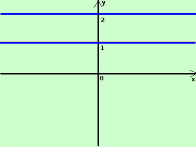

|
sviluppo tracciare il grafico della seguente funzione
Necessariamente il grafico potra' solo essere intuitivo: la funzione vale 1 nei punti dove l'argomento e' razionale; invece vale 2 nei punti dove l'argomento e' reale e non razionale quindi ad esempio per x = 1, x = 1/2, x = 9,0000089,..... vale 1 mentre nei punti x = e; x = π x = √2;.... vale 2  la funzione e' composta di due rette orizzontali; sulla inferiore di equazione y = 1 un insieme in corrispondenza biunivoca a Q; e sulla superiore di equazione y = 2, un insieme in corrispondenza biunivoca con ℜ\Qnei vari punti la funzione salta continuamente da un valore all'altro, mentre le due rette sono composte di infiniti valori: la retta inferiore e' composta da un'infinita' numerabile di punti (l'insieme Q e' numerabile,cioe' puo' essere messo in corrispondenza biunivoca con l'insieme dei numeri naturali) mentre la retta superiore e' un insieme non numerabile Disegno le rette (in rosso) considero le parti di rette disegnate nelle loro parti di piano in blu il risultato finale |